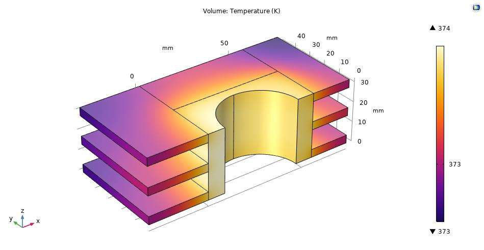
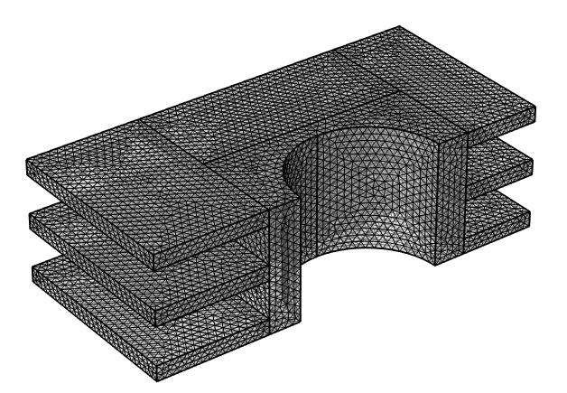
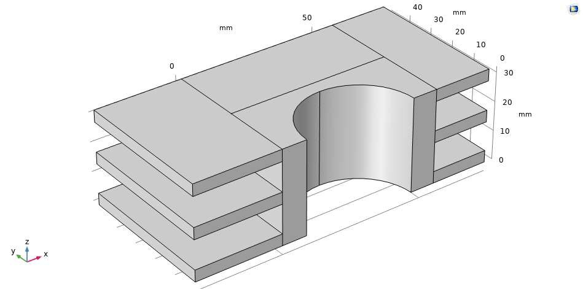
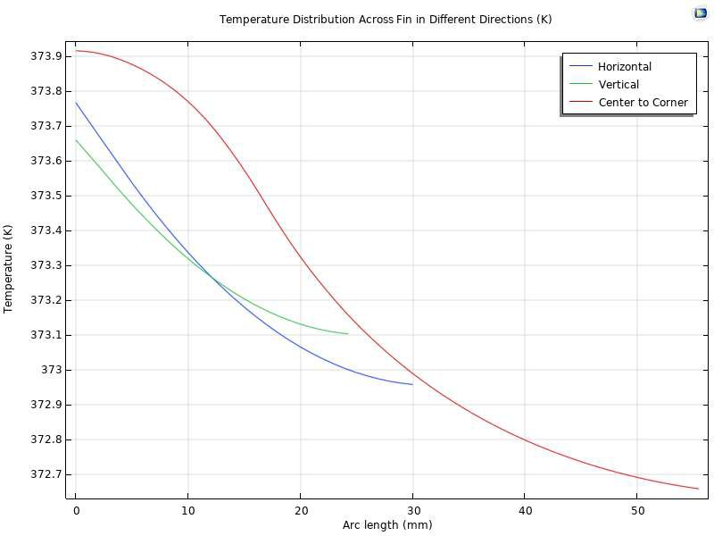

The Honda AF16 50cc is an air-cooled engine: it has no radiator and no coolant, so the fins cast into the cylinder are the entire thermal management system. If they underperform, the engine seizes. This study modeled the finned cylinder in COMSOL to find out whether they were sized correctly — but the real work was proving the answer could be trusted. Mesh independence first, then a benchmark against Honda's own service data, then a physical explanation for the gap between the two.
- ~374 Ksimulated base temp
- 490 Kmanufacturer critical limit
- 20.7fin effectiveness
- 98.7%fin efficiency
- 8,556.5 mm²fin area, derived by hand




Modeling approach
- Modeled a symmetric CAD geometry of the cylinder section, exploiting symmetry about the cylindrical cutout to halve solve cost without losing the gradients of interest.
- Derived an analytical fin surface area of 8,556.5 mm² by hand — both to support the effectiveness and efficiency calculations and to give an independent check on the model.
- Assigned aluminum properties throughout (2,680 kg/m³, 150 W/m·K, 930 J/kg·K), solved the 3D steady-state conductive and convective field with quadratic Lagrange elements, and treated free convection off the fins as a boundary condition rather than meshing the surrounding air.
Verification & validation
- Ran a formal mesh convergence study across five refinement levels before reporting any result — maximum temperature moved less than 0.27% between the coarsest and finest mesh, and was flat at 374 K from Fine onward.
- Benchmarked the simulated base temperature against Honda service manual values of 460 K average operating and 490 K critical, confirming a safe thermal margin.
- Justified the discrepancy physically rather than dismissing it: the model is static and unloaded, where the published figures come from an engine under load and propelling a vehicle. A transient study under forced convection would close the gap.
- Computed the average convective heat transfer coefficient and derived a fin effectiveness of 20.7 — well above the threshold of 2 at which fins are considered worth adding — and a fin efficiency of 98.7%.
| Mesh | Elements | Max temperature |
|---|---|---|
| Coarse | 1,573 | 375 K |
| Normal | 2,283 | 375 K |
| Fine | 5,433 | 374 K |
| Extra fine | 44,787 | 374 K |
| Extremely fine | 96,089 | 374 K |
- COMSOL Multiphysics
- Finite element analysis
- Mesh convergence
- Conduction & convection
- Fin effectiveness & efficiency
- Verification & validation